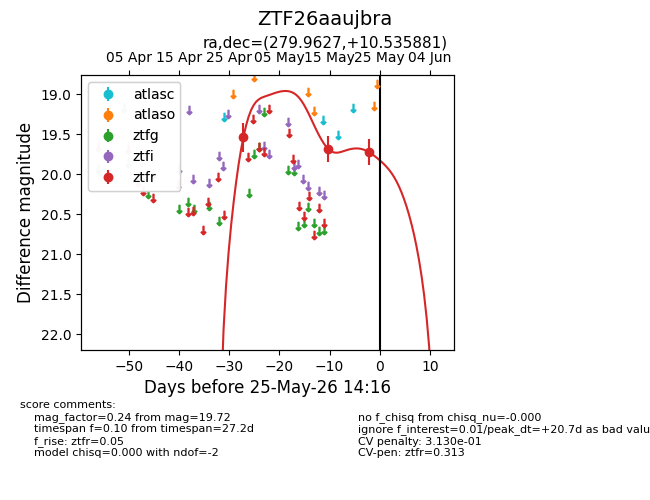
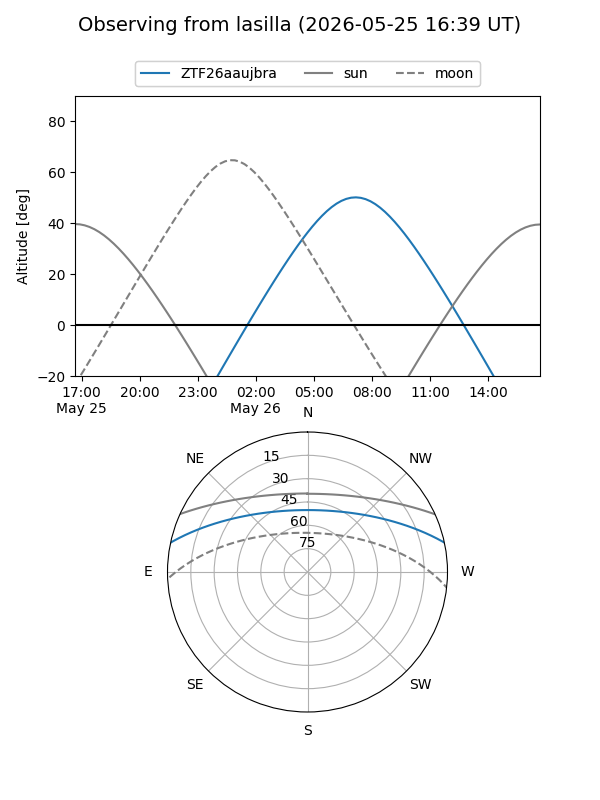
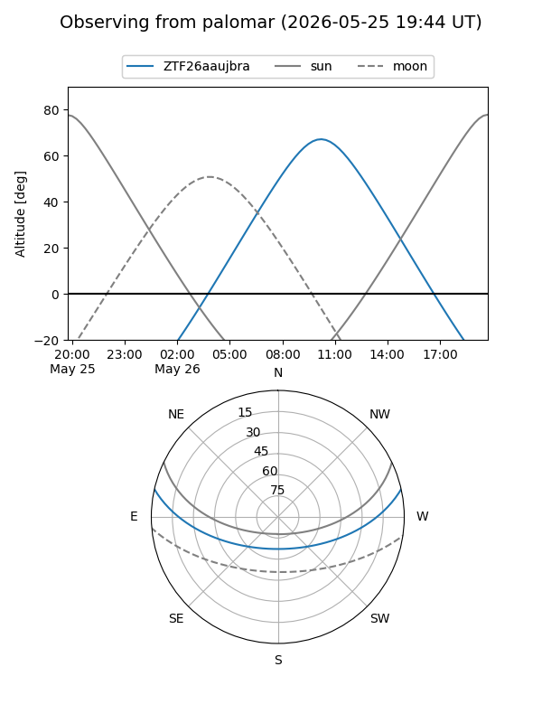
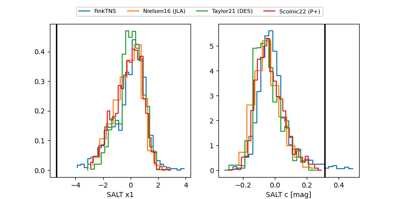

ZTF26aaujbra
Target ZTF26aaujbra at 2026-05-25 14:18
Aliases and brokers:
lsst-FINK: link
lsst-Lasair: link
lsst-ALeRCE: link
ztf-FINK: link
ztf-Lasair: link
ztf-ALeRCE: link
alt names
ZTF26aaujbra (ztf,fink_ztf)
Coordinates:
equatorial (ra, dec) = 279.9627,+10.53588
equatorial (HMS+DMS) = 18:39:51.05,+10:32:09.17
galactic (l, b) = (41.0512,+7.33068)
Flags:
likely cv: !
Photometry:
last ztfr=19.72
3 ztfr detections
Lightcurve

Visibility


Additional plots
